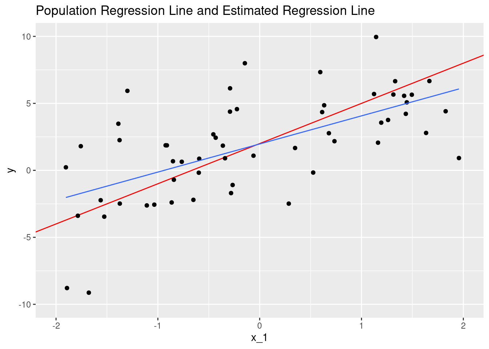
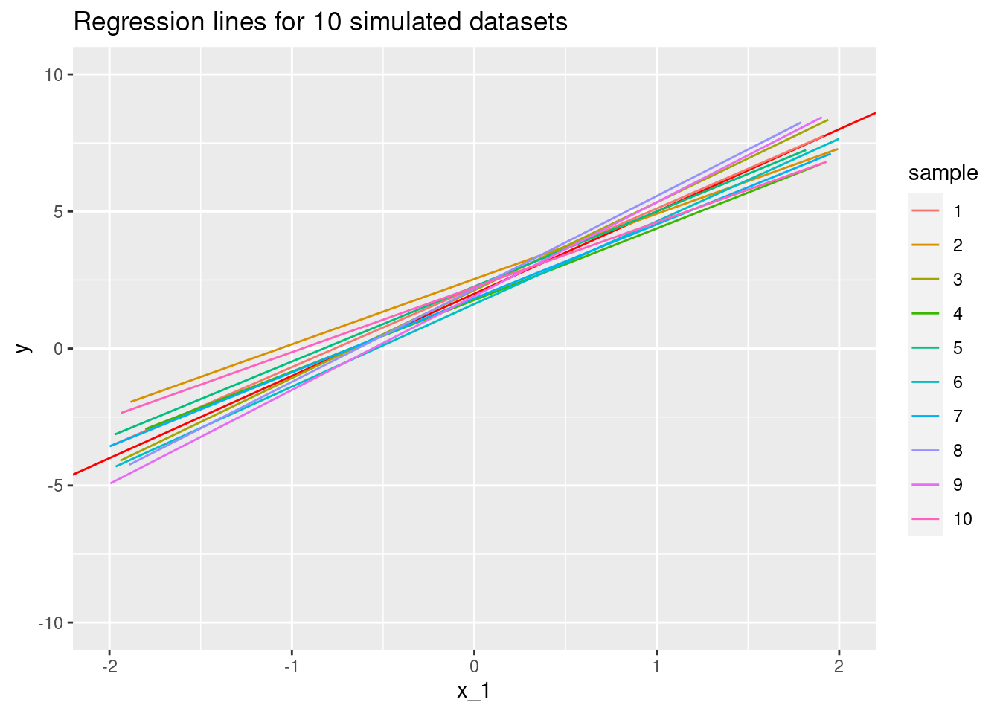
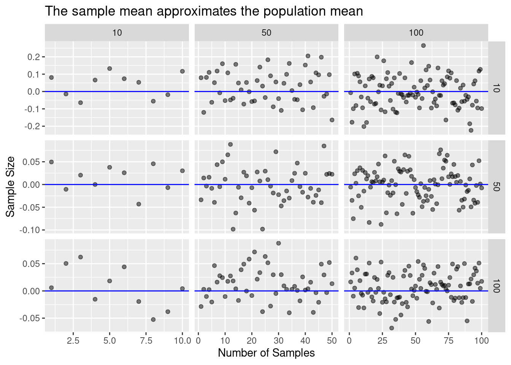
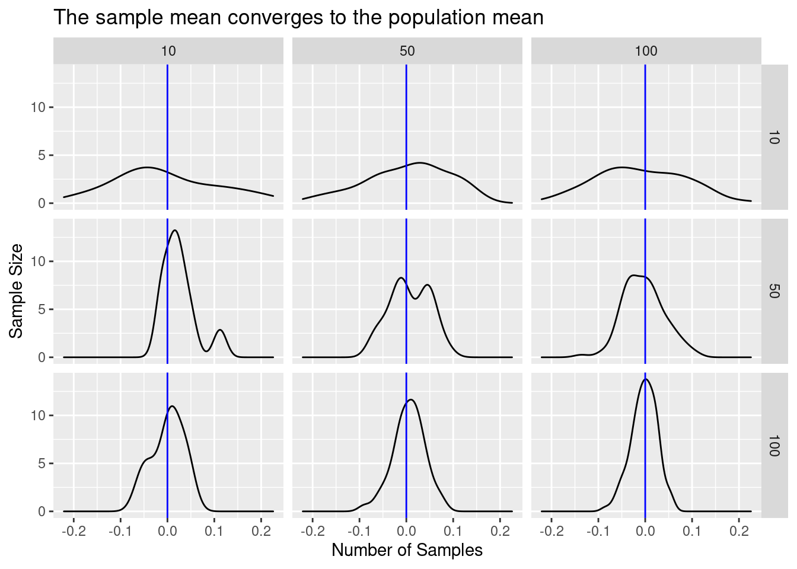
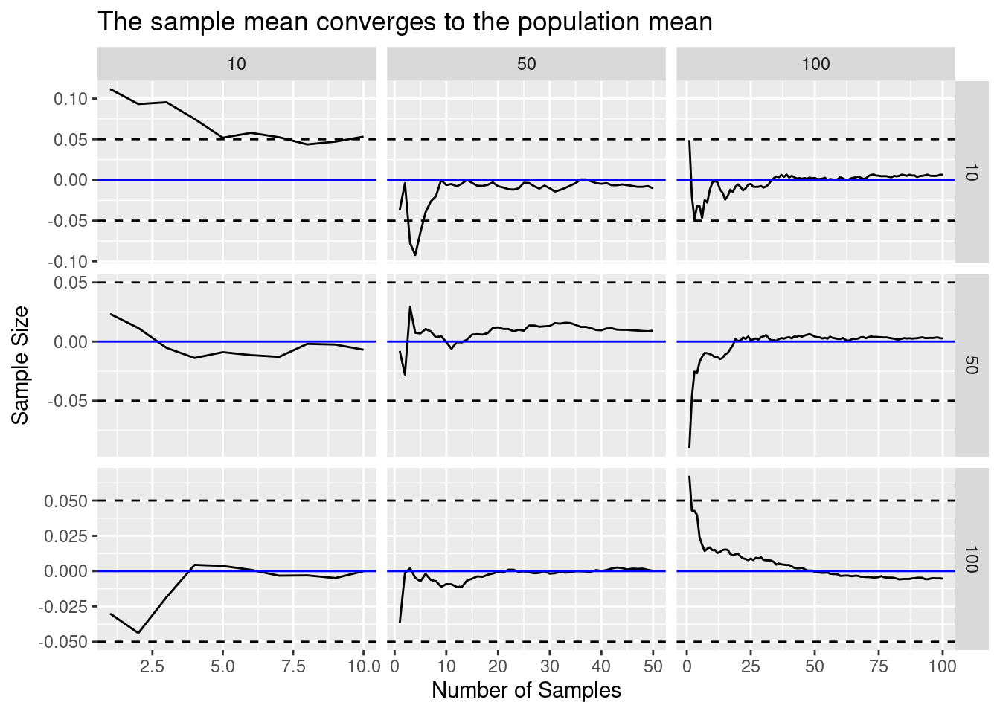

Chapter 3 Linear Regression
What is linear regression?
- “a very simple approach for supervised learning”
- “a useful tool for predicting a quantitative response”
- widely used statistical learning method
- a special case of more generalized learning methods
- Useful for answering many different types of questions
Advantages
- Simplicity
- Conceptual: based on averages (or “expectations” in econometrics)
- Procedural: there are closed form solutions for estimating parameters
- Interpretable
- There are meaningful visualizations and interpretations of model results
- It is possible to address many types of questions, and apply statistical tests to judge results including:
- Is there a relationship between predictors and response variables?
- How strong is the relationship?
- Which predictors are related to the response?
- How accurate are the estimated model parameters?
- How accurate are the predictions generated by the model?
- Is the model a good fit?
- Are there interactions among the predictors?
3.1 Simple linear regression
Simple linear regression predicts a quantitative response \(y\) on the basis of a single predictor, \(x\), assuming that there is a linear relationship between \(y\) and \(x\) in the form:
\[ \begin{array}{rcl} y &=& \beta_0 + \beta_{1}x + \epsilon \\ &\textrm{or}& \\ y &\approx& \beta_0 + \beta_{1}x \end{array} \]
Read as: “regressing \(y\) on \(x\)”, “regressing \(y\) onto \(x\)”, or “\(y\) is approximately modeled as a linear function of \(x\)”
This equation describes the population regression line: the best linear approximation of the true relationship between \(y\) and \(x\). The model parameters (or coefficients), \(\beta_0\) and \(\beta_1\), are unknown constants and the error term, \(\epsilon\), is not measurable in practice.
- \(y\): the observed true value of \(y\)
- \(\beta_0\): the intercept, or the expected value of \(y\), when \(x\) is 0
- \(\beta_1\): the slope, or the expected change in \(y\) per unit change in \(x\), or \(\frac{\Delta y}{\Delta x}\)
- \(\epsilon\): irreducible error, or variation in \(y\) that can not be accounted for by the model
3.1.1 Estimating Coefficients
In practice \(\beta_0\) and \(\beta_1\) are unknown constants that must be estimated based on available data using some procedure.
- Each \((x_i, y_i)\) pair represents an example observation drawn from the population of possibilities for the joint distribution of \(X\) and \(Y\).
- Based on many (\(n\)) examples, develop estimates for \(\hat{\beta}_0\) and \(\hat{\beta}_1\).
- Then compute \(\hat{y}_i\), which is the value for \(y_i\) predicted by the model based on \(x_i\) (where \(i \in \{1 \ldots n\}\)).
\[ \hat{y}_i \approx \hat{\beta}_0 + \hat{\beta}_1 x_i \]
The prediction is an approximation is unlikely to be exactly equal to the actual value. The difference is called the residual. For a particular example observation, \(i\), the residual is computed as:
\[ e_i = y_i - \hat{y}_i \]
Better estimates of the parameters \(\beta_0\) and \(\beta_1\) will yield better predictions for \(y\) and, therefore, smaller residuals. The residual sum pf squares (RSS) is a measure of the overall magnitude of the prediction error for a particular set of coefficients and training data. The lower the RSS, the better the estimates should be (assuming the model is correctly specified, etc.).
\[ \begin{array}{rcl} RSS &=& \sum_{i}^{n} e_{i}^{2} \\ &=& \sum_{i}^{n} (y_i -\hat{y}_i)^2 \\ &=& \sum_{i}^{n} (y_i - \hat{\beta}_0 + \hat{\beta}_1 x_i)^2 \end{array} \]
Minimizing the RSS is accomplished by choosing appropriate values for \(\hat{\beta}_0\) and \(\hat{\beta}_1\), which are estimates for the true (but unknown) population parameters, \(\beta_0\) and \(\beta_1\). This method is referred to as the least squares approach in the text.
3.1.2 Simulated Data Example
- model: \(y = \beta_0 + \beta_1 x + \epsilon\)
- parameters: \(\beta_0\) = 2 and \(\beta_1\) = 3.
Simulate drawing a sample from the population by generating data
# Number of observations
n <- 100
# random variable x
x <- runif(n)
# True slope and intercept of line
beta <- c(2, 3)
# irreducible error
epsilon <- rnorm(n)
# True value of y
y <- beta[1] + beta[2] * x + epsilonFirst few rows of the simulated data sample
| y | x | epsilon |
|---|---|---|
| 4.299174 | 0.8543299 | -0.2638157 |
| 1.188886 | 0.1168752 | -1.1617401 |
| 5.271001 | 0.6867674 | 1.2106981 |
| 3.357570 | 0.0163384 | 1.3085549 |
| 2.984540 | 0.3480136 | -0.0595011 |
| 4.802275 | 0.6009924 | 0.9992976 |
Minimize RSS to compute least squares estimates for \(\hat{\beta_0}\) and \(\hat{\beta_1}\)
# residual sum of squares formula
rss <- function(...) {
beta <- c(...)
sum((y - (beta[1] + beta[2] * x))^2)
}Try guessing the parameters that will minimize RSS for the sample
tibble(beta_0 = c(0, 1, 2, 1.8), beta_1 = c(1, 2, 3, 3.3)) %>%
group_by(beta_0, beta_1) %>%
mutate(RSS = rss(beta_0, beta_1)) %>%
ungroup() %>%
kable()| beta_0 | beta_1 | RSS |
|---|---|---|
| 0.0 | 1.0 | 1094.7367 |
| 1.0 | 2.0 | 363.2831 |
| 2.0 | 3.0 | 102.3890 |
| 1.8 | 3.3 | 101.1695 |
Surprisingly (perhaps) using \(\hat{\beta_0}\) = 2 and \(\hat{\beta_1}\) = 3 does not yield the lowest RSS for the sample data even though these are the exact parameters \(\beta_0\) and \(\beta_1\) used to generate the sample observations. This is because irreducible error component is not observed and our sample size is limited.
Instead of guessing we can use R to automatically choose beta to minimize RSS. The optim() can do this.
## [1] 1.778687 3.5452843.1.3 Closed-form solution
Applying some algebra and calculus to the RSS formula yields the following exact solutions for estimating \(\hat{\beta_0}\) and \(\hat{\beta_1}\) that will minimize RSS
\[ \begin{array}{rcl} \hat{\beta_1} & = & \frac{\sum_{i=1}^{n} (x_i - \bar{x})(y_i - \bar(y)) }{ \sum_{i=1}^{n} (x_i - \bar{x})^2 } \\ \hat{\beta_0} & = & \bar{y} - \hat{\beta_1}\bar{x} \\ \end{array} \]
## [1] 3.544119## [1] 1.779281Estimated model using least squares method:
\(\hat{y}\) = 1.78 + 3.54 \(x\)
We can also use the lm() function to estimate the parameters
##
## Call:
## lm(formula = y ~ x)
##
## Coefficients:
## (Intercept) x
## 1.779 3.5443.2 Assessing Accuracy of Coefficients
The goal is to estimate pthe arameters of the actual population regression function based on a sample
Since we have estimated our parameters based on a sample, there is likely to be some error.
simulate_data <- function(beta = c(0, 0), n = 100, sd = 1) {
# column dimension
m <- length(beta)
# Population parameters
beta <- matrix(beta, nrow = 1, dimnames = list(NULL, paste0("beta_", seq_along(beta)-1)))
# Sample Data
X <- matrix(
data = c(rep(1, n), # Assign a constant term for x_0
rnorm((m-1) * n, sd = sd)), # random normals for remaining x
ncol = m, nrow = n,
byrow = FALSE,
dimnames = list(NULL, paste0("x_", seq_along(beta)-1))
)
# Irreducible error
e <- matrix(rnorm(n, sd = sd), ncol = 1, dimnames = list(NULL, "e"))
# Compute y
y <- X %*% t(beta) + e
colnames(y) <- "y"
# Return a data frame, drop the constant
data.frame(cbind(y, X, e))[, -2]
}
#test <- simulate_data(beta = c(2, 3), n = 1000)
#testHere is a plot of linear function with the parameters we estimated, compared with the population regression function.
# Replicate Figure 3.3
# Generate 1 sample and plot
simulate_data(beta = c(2, 3), n = 100, sd = 3) %>%
ggplot(mapping = aes(x = x_1, y = y)) +
geom_abline(slope = 3, intercept = 2, color = "red") +
geom_point() +
geom_smooth(method = "lm", se = FALSE, size = 0.5) +
scale_x_continuous(limits = c(-2, 2)) +
scale_y_continuous(limits = c(-10, 10)) +
labs(title = "Population Regression Line and Estimated Regression Line")## `geom_smooth()` using formula 'y ~ x'## Warning: Removed 44 rows containing non-finite values (stat_smooth).## Warning: Removed 44 rows containing missing values (geom_point).
Resampling several times, we find that we end up with several estimated functions (sets of parameters)
# Generate 10 samples and plot
map_df(1:10, ~ simulate_data(beta = c(2, 3), n = 100, sd = 3), .id = "sample") %>%
mutate(sample = as.factor(as.numeric(sample))) %>%
ggplot(mapping = aes(x = x_1, y = y, color = sample)) +
geom_abline(slope = 3, intercept = 2, color = "red") +
geom_smooth(method = "lm", se = FALSE, size = 0.5) +
scale_x_continuous(limits = c(-2, 2)) +
scale_y_continuous(limits = c(-10, 10)) +
labs(title = "Regression lines for 10 simulated datasets")## `geom_smooth()` using formula 'y ~ x'## Warning: Removed 549 rows containing non-finite values (stat_smooth).
How can we assess accuracy? Statisics!
pmap_dfr(
expand.grid(n = c(10, 50, 100), k = c(10, 50, 100), N = 10000, mean = 0),
generate_sample_means
) %>%
law_of_large_n_gridplot_dots() 
pmap_dfr(
expand.grid(n = c(10, 50, 100), k = c(10, 50, 100), N = 10000, mean = 0),
generate_sample_means
) %>%
law_of_large_n_gridplot_density()
pmap_dfr(
expand.grid(n = c(10, 50, 100), k = c(10, 50, 100), N = 10000, mean = 0),
generate_sample_means
) %>%
law_of_large_n_gridplot()